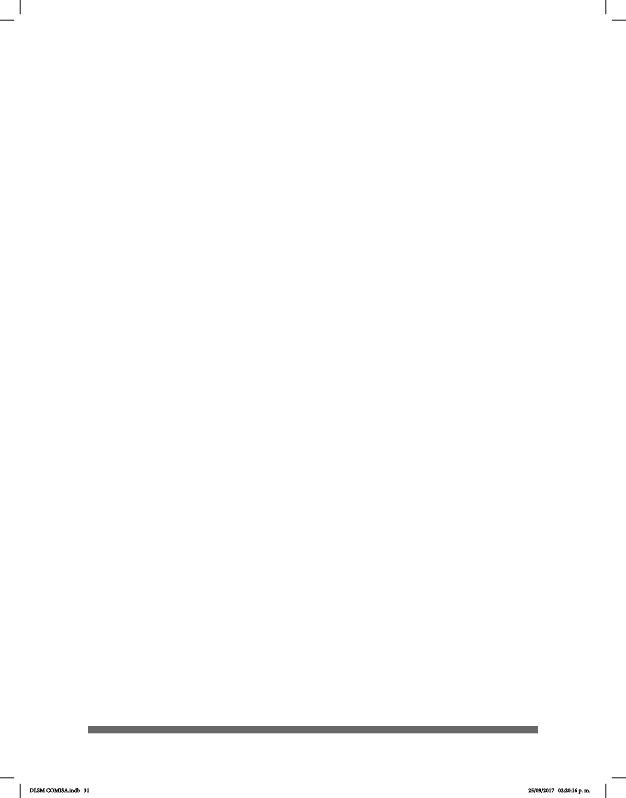

31
de intérpretes de lengua de señas. Anteriormente existía una Asociación Nacional de
Intérpretes de Lengua de Señas (ANILS) que ahora se denomina Asociación de
Intérpretes y Traductores de Lengua de Señas Mexicana (AIT-LSM, A.C.), aliada a
la Asociación Mundial de Intérpretes de Lengua de Señas (WASLI por sus siglas en
inglés).
• La investigación sobre el desenvolvimiento de la LSM a nivel universitario es un
componente importante para el desarrollo de la lengua de señas y la Comunidad
Sorda en la Ciudad de México y en todo el país. Lamentablemente existen pocos
materiales y libros del área lingüística sobre la lengua de señas como objeto de estudio
y se han hecho pocas investigaciones de la LSM, como la tesis de la gramática de LSM
de la Dra. Miroslava Cruz Aldrete, el Diccionario Español-Lengua de Señas Mexicana
(DIELSEME), entre otros.
• Las oportunidades de educación para las personas sordas en el país han
mejorado paulatinamente desde el año 2000. A pesar de que la mayoría de las personas
sordas no reciben educación en las zonas urbanas y rurales, un pequeño porcentaje de
niños sordos tienen acceso a la instrucción primaria en las escuelas para sordos y las
escuelas promotoras de la inclusión. Sin embargo, muchos niños sordos no se
benecian del aprendizaje inclusivo en las escuelas regulares debido a las barreras
de comunicación instructor-alumno y a la falta de servicios de apoyo. En la mayoría
de las escuelas del programa del Centro de Atención Múltiple (CAM), u otro programa,
desconocen la competencia lingüística pues la LSM no se utiliza como un medio de
instrucción en las aulas.
• Rara vez se enseña el español a través del oralismo, se utiliza el español señado;
algunos lo utilizan con el pretexto de la comunicación total o con uno o dos niños
sordos que enseñan a los alumnos oyentes. En los niveles socioeconómicos bajos
los niños aprenden señas caseras. En muchas de las escuelas en las que se han
inscrito los niños sordos, el personal docente y de apoyo incluye adultos sordos que
sirven como modelos de lengua para los niños sordos de familias oyentes.
• Algunos niños sordos, en función de sus capacidades académicas y apoyo de la
familia, tienen acceso a la educación secundaria tanto en entornos inclusivos como
especiales con ayuda de los servicios de interpretación de lengua de señas, aunque
no sean sucientes. La lengua de señas hace posible que los adultos sordos tengan
acceso a la educación superior.
Como parte de las actividades sociales de los sordos están:
• Las Actividades religiosas: Las personas sordas de la Ciudad de México han
formado parte de sus propias iglesias en diferentes comunidades de todo el país, donde
la LSM ha sido utilizada para las misas, las congregaciones, los sermones, bodas y para
estudiar la Biblia. En la Ciudad de México en 1909 en la Iglesia de San Hipólito fue
llevada a cabo la primera misa en LSM; poco a poco ha aumentado su uso en diferentes
religiones, como en los Testigo de Jehová, la Cristiana, en la Iglesia de Cristo, en la
DLSM COMISA.indb 31 25/09/2017 02:20:16 p. m.